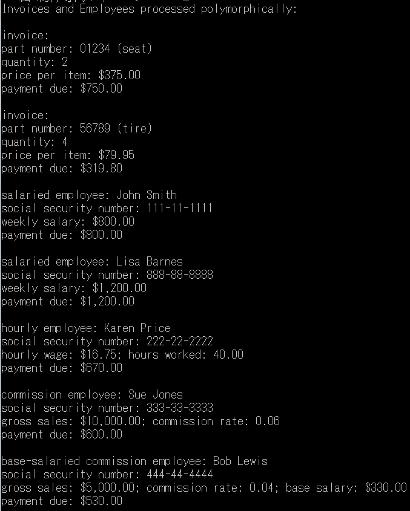

interface Payable{
double getPaymentAmount(); }
class Invoice implements Payable{ //收據
private String partNumber;
private String partDescription;
private int quantity;
private double pricePerItem;
// 支付收據包含的四個項目
public Invoice( String part, String description, int count,
double price ){
partNumber = part;
partDescription = description;
setQuantity( count );
setPricePerItem( price ); }
// 編號
public void setPartNumber( String part ){
partNumber = part;}
public String getPartNumber(){
return partNumber;}
//描述
public void setPartDescription( String description ){
partDescription = description;}
public String getPartDescription(){
return partDescription;}
//數量
public void setQuantity( int count ){
quantity = ( count < 0 ) ? 0 : count; // 數量不為負數}
public int getQuantity(){
return quantity;}
// 單價
public void setPricePerItem( double price ){
pricePerItem = ( price < 0.0 ) ? 0.0 : price;}
public double getPricePerItem(){
return pricePerItem;}
//傳回收據項目
public String toString(){
return String.format( "%s: \n%s: %s (%s) \n%s: %d \n%s: $%,.2f",
"invoice", "part number", getPartNumber(), getPartDescription(),
"quantity", getQuantity(), "price per item", getPricePerItem() );}
//應付金額
public double getPaymentAmount(){
return getQuantity() * getPricePerItem();} // 數量*單價
}
//員工
abstract class Employee implements Payable{
private String firstName;
private String lastName;
private String socialSecurityNumber;
// 姓名與SSN
public Employee( String first, String last, String ssn ){
firstName = first;
lastName = last;
socialSecurityNumber = ssn;}
public void setFirstName( String first ){
firstName = first;}
public String getFirstName(){
return firstName;}
public void setLastName( String last ){
lastName = last;}
public String getLastName(){
return lastName;}
public void setSocialSecurityNumber( String ssn ){
socialSecurityNumber = ssn;}
public String getSocialSecurityNumber(){
return socialSecurityNumber;}
// 傳回員工資料
public String toString(){
return String.format( "%s %s\nsocial security number: %s",
getFirstName(), getLastName(), getSocialSecurityNumber() );}
}
class SalariedEmployee extends Employee{
private double weeklySalary;
// 一般受薪員工
public SalariedEmployee( String first, String last, String ssn,
double salary ){
super( first, last, ssn );
setWeeklySalary( salary );}
public void setWeeklySalary( double salary ){
weeklySalary = salary < 0.0 ? 0.0 : salary;}
public double getWeeklySalary(){
return weeklySalary;}
public double getPaymentAmount(){
return getWeeklySalary();}
// 回傳一般受薪員工項目
public String toString(){
return String.format( "salaried employee: %s\n%s: $%,.2f",
super.toString(), "weekly salary", getWeeklySalary() );}
}
//時薪員工
class HourlyEmployee extends Employee implements Payable{
private double wage; // 時薪
private double hours; // 工時
public HourlyEmployee( String first, String last, String ssn,
double hourlyWage, double hoursWorked )
{
super( first, last, ssn );
setWage( hourlyWage );
setHours( hoursWorked ); }
public void setWage( double hourlyWage ){
wage = ( hourlyWage < 0.0 ) ? 0.0 : hourlyWage;}
public double getWage(){
return wage;}
public void setHours( double hoursWorked ){
hours = ( ( hoursWorked >= 0.0 ) && ( hoursWorked <= 168.0 ) ) ?
hoursWorked : 0.0;}
public double getHours(){
return hours;}
public double getPaymentAmount(){
if ( getHours() <= 40 ) // no overtime
return getWage() * getHours();
else
return 40 * getWage() + ( getHours() - 40 ) * getWage() * 1.5;}
// 回傳時薪員工項目
public String toString(){
return String.format( "hourly employee: %s\n%s: $%,.2f; %s: %,.2f",
super.toString(), "hourly wage", getWage(),
"hours worked", getHours() );}
}
class CommissionEmployee extends Employee implements Payable{
private double grossSales; // 銷售額
private double commissionRate; // 提成比率
public CommissionEmployee( String first, String last, String ssn,
double sales, double rate )
{
super( first, last, ssn );
setGrossSales( sales );
setCommissionRate( rate ); }
public void setCommissionRate( double rate ){
commissionRate = ( rate > 0.0 && rate < 1.0 ) ? rate : 0.0;}
public double getCommissionRate(){
return commissionRate;}
public void setGrossSales( double sales ){
grossSales = ( sales < 0.0 ) ? 0.0 : sales;}
public double getGrossSales(){
return grossSales;}
public double getPaymentAmount(){
return getCommissionRate() * getGrossSales();}
// 回傳業績提成員工項目
public String toString(){
return String.format( "%s: %s\n%s: $%,.2f; %s: %.2f",
"commission employee", super.toString(),
"gross sales", getGrossSales(),
"commission rate", getCommissionRate() );}
}
class BasePlusCommissionEmployee extends CommissionEmployee{
private double baseSalary; // 底薪
public BasePlusCommissionEmployee( String first, String last,
String ssn, double sales, double rate, double salary )
{
super( first, last, ssn, sales, rate );
setBaseSalary( salary ); }
public void setBaseSalary( double salary ){
baseSalary = ( salary < 0.0 ) ? 0.0 : salary; }
public double getBaseSalary(){
return baseSalary*1.1;}
public double getPaymentAmount(){
return getBaseSalary() + super.getPaymentAmount();}
public String toString(){
return String.format( "%s %s; %s: $%,.2f",
"base-salaried", super.toString(),
"base salary", getBaseSalary() );}
}
public class HW5_2{
public static void main( String args[] ){
// 陣列儲存支付項目
Payable payableObjects[] = new Payable[ 7 ];
payableObjects[ 0 ] = new Invoice( "01234", "seat", 2, 375.00 );
payableObjects[ 1 ] = new Invoice( "56789", "tire", 4, 79.95 );
payableObjects[ 2 ] =
new SalariedEmployee( "John", "Smith", "111-11-1111", 800.00 );
payableObjects[ 3 ] =
new SalariedEmployee( "Lisa", "Barnes", "888-88-8888", 1200.00 );
payableObjects[ 4 ] =
new HourlyEmployee( "Karen", "Price", "222-22-2222", 16.75, 40 );
payableObjects[ 5 ] =
new CommissionEmployee( "Sue", "Jones", "333-33-3333", 10000 ,.06 );
payableObjects[ 6 ] =
new BasePlusCommissionEmployee( "Bob", "Lewis", "444-44-4444", 5000 , .04 , 300 );
System.out.println(
"Invoices and Employees processed polymorphically:\n" );
// 處理支付項目每個元素
for ( Payable currentPayable : payableObjects ){
// 輸出應支付金額
System.out.printf( "%s \n%s: $%,.2f\n\n",
currentPayable.toString(),
"payment due", currentPayable.getPaymentAmount() );}
}
}